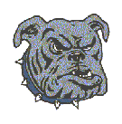
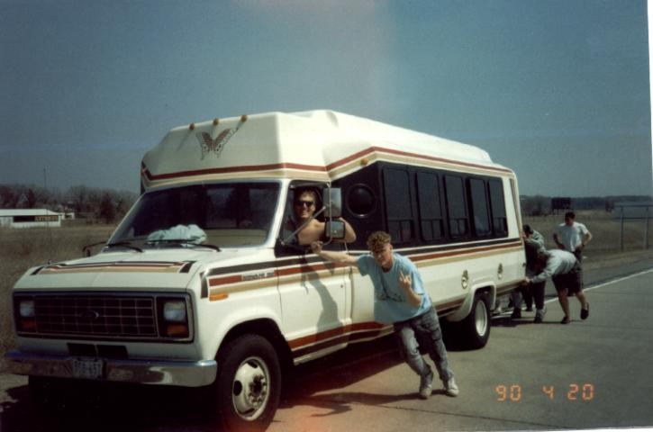

The Founding of WSU Rugby
It was late winter '89 when the whole thing got started. There was a small group of students interested in playing rugby, or for that matter, even knew what rugby was. The first posting was a photocopy on to white paper hung by scotch tape. It said something along the lines of.....starting a rugby club....meeting in Kryzsko commons. Lasantha Dainakie and Andy Klinker were the guys that took the bull by the horns, and hung those.
The first meeting was not much of a gathering. I remember Lasantha, Klinker, Specht, Pete Carlson, Paul McCarthy, and a couple of other guys......maybe 10 people total. We spook about any experience that we had with the game, and other people we could get to come out for the team. Not much experience at all. Lesantha was the rugby god compared to everyone else. He had been playing the game in his native land of Sri Lanka since he was 8 yrs. old. I had been around rugby since I was about 10. My four cousins played for the Dubuque men's side for many years. Besides that, I am not sure that anyone else knew the game?
To get started we made contact with the UWLaCrosse club, and their coach Dick Brewer. We explained that we were starting a new team, had low numbers, and needed some practical practice partners. The Doggs would go down to UWL twice a week during the beginning. It didn't take long for the numbers to grow, and the Doggs to catch on to the fundamentals of the game. We then started to practice on our own, and took it from there. Lasantha coached the backs, and I coached the forwards. We both coached the mental aspect of the game.
The first game was that spring against UWL.....we got killed! Not due to lack of effort, but the mental aspect of knowing where one should be in comparison to ball movement. The next couple of games we played much better. The Doggs were starting to dig in. I think it was the forth game of the season before we had a win. Not that the win was pretty, but it was a Dogg style win. The first Doggs were a very mean bunch. Tough, and willing to give up their body for the cause. Soon the Doggs had established themselves as a VERY physical team in the state. The mental aspect of the game continued to improve during the 1st season, and during the summer with guys picking up games back home at tourneys.
During the fall season of '89 the Doggs continued to improve, and also added some very good athletes to the team. The team was a serious contender to the state championship by the fall of '90. Dogg Rugby by that time was well known, and feared. The Doggs were not only the most physical team in the state, but becoming very game wise. Guys knew where to be, and what to do when they got there. If one of our 15 went down, we would bring in somebody that was just as good.
The first meeting was not much of a gathering. I remember Lasantha, Klinker, Specht, Pete Carlson, Paul McCarthy, and a couple of other guys......maybe 10 people total. We spook about any experience that we had with the game, and other people we could get to come out for the team. Not much experience at all. Lesantha was the rugby god compared to everyone else. He had been playing the game in his native land of Sri Lanka since he was 8 yrs. old. I had been around rugby since I was about 10. My four cousins played for the Dubuque men's side for many years. Besides that, I am not sure that anyone else knew the game?
To get started we made contact with the UWLaCrosse club, and their coach Dick Brewer. We explained that we were starting a new team, had low numbers, and needed some practical practice partners. The Doggs would go down to UWL twice a week during the beginning. It didn't take long for the numbers to grow, and the Doggs to catch on to the fundamentals of the game. We then started to practice on our own, and took it from there. Lasantha coached the backs, and I coached the forwards. We both coached the mental aspect of the game.
The first game was that spring against UWL.....we got killed! Not due to lack of effort, but the mental aspect of knowing where one should be in comparison to ball movement. The next couple of games we played much better. The Doggs were starting to dig in. I think it was the forth game of the season before we had a win. Not that the win was pretty, but it was a Dogg style win. The first Doggs were a very mean bunch. Tough, and willing to give up their body for the cause. Soon the Doggs had established themselves as a VERY physical team in the state. The mental aspect of the game continued to improve during the 1st season, and during the summer with guys picking up games back home at tourneys.
During the fall season of '89 the Doggs continued to improve, and also added some very good athletes to the team. The team was a serious contender to the state championship by the fall of '90. Dogg Rugby by that time was well known, and feared. The Doggs were not only the most physical team in the state, but becoming very game wise. Guys knew where to be, and what to do when they got there. If one of our 15 went down, we would bring in somebody that was just as good.

The Doggs made it to the final four the fall of '90 (took 4th), and '91 (took 3rd). The following year '92 the Doggs won their 1st state championship. After that following spring '93 most of the original Doggs had left the pound. That was pretty much the end of the original Doggs era........
Rusker, the original #8